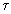

Вычисление начальных условий сопряженной системы
в задаче управления
с квадратичным критерием качества
В.Д.Бобко, А.А.Нестеров
Лаборатория нечетких технологийИнститут автоматики и электрометрии
Сибирское отделение РАН
630090 Новосибирск, просп. ак. Коптюга, 1
Россия
Тел.: (3832) 33 26 25,
Факс: (3832) 33 38 63
E-mail: zolotukhin@iae.nsk.su
В задаче управления, оптимального по минимуму квадрата ошибки, предложен алгоритм вычисления начальных условий сопряженной системы. Получены дифференциальные уравнения для используемых в алгоритме вспомогательных функций. Приведены рекомендации по выбору начальных приближений для искомых величин. Обсуждены вопросы сходимости и области применения предлагаемого алгоритма. Приведены результаты численного эксперимента.
1. Реализация оптимальных систем сталкивается с трудностями вычисления начальных
условий сопряженной системы. Задача вычисления этих начальных условий остается актуальной,
несмотря на большое количество работ, посвященных данной проблеме. Мы рассмотрим один из
методов решения этой задачи для линейной системы с квадратичным критерием качества,
фиксированным временем управления и отсутствием ограничений на правом конце траектории.
Пусть управляемая система описывается уравнением
где
X(t) n-мерный вектор координат управляемой системы,
U(t) - r-мерный вектор управляющих параметров,
A и B - матрицы размерности
Управляющие параметры подчинены ограничениям
Необходимо определить управление U(t), удовлетворяющее условиям (2) и минимизирующий функционал
при заданных начальных условиях X0, фиксированном T и свободном правом конце X(T) траектории управляемой системы. Здесь D-положительно определенная симметричная матрица
где сопряженный вектор P(t) определяется уравнением
и условиями трансверсальности
Соотношения (1), (4), (5) и (6) полностью решают поставленную задачу, но в вычислительном отношении они очень неудобны, так как представляют собой нелинейную краевую задачу. Желательно найти метод, позволяющий по условиям (6) на правом конце траектории вычислять начальные условия P(0)=C сопряженной системы уравнений. В этом случае вместо нелинейной задачи мы получим задачу Коши, для решения которой разработаны эффективные вычислительные методы.
2. При фиксированном
и, следовательно, условия (6) при фиксированном Т дают систему уравнений
относительно начальных условий сопряженной системы.
Решение системы (8) возможно только численными методами, например, каким либо из методов последовательных приближений. Оставим пока в стороне вопросы сходимости и определения начального приближения и рассмотрим использование метода Ньютона для решения системы уравнений (8).
3. Применение метода Ньютона к уравнению (8) позволяет построить последовательность
если задано начальное приближение C0 и
существуют матрицы для C=Ci,
Предполагая существование соответствующих частных производных, введем в рассмотрение
матрицы
размерности
размерности
Из (4)следует, что
где функция sign(x) понимается как покомпонентная, т.е.
В связи с (12) производные от U в (11) следует понимать в обобщенном смысле. Кроме того, в нашем случае U не зависит явно от X(t, C) и, следовательно,
Продифференцировав с учетом (10) и (14) соотношения (1) и (5) по С, получим матричные дифференциальные уравнения
которые вместе с очевидными начальными условиями
( Е - единичная матрица) и уравнениями (1) и (5) дают все необходимые соотношения для вычисления интересующей нас матрицы Pc(T,C).
4. Из (13) следует, что матрица
является
диагональной с -функциями на диагонали. В связи
с этим интегрирование уравнений (15) требует знания моментов смены знаков управляющих
параметров, что, собственно и является главной проблемой в нашей задаче оптимального
управления. Эти трудности можно преодолеть использованием более гладкой функции, чем в
соотношении (13), но мало отличающейся от оптимальной по своему воздействию
на управляемую систему. Вместо
при достаточно больших значениях g.
Очевидно, в этом случае и вместо -функций при вычислении соответствующих производных можно использовать функции из -образующей последовательности
Использование соотношений (17) и (18) при достаточно большом g позволяет провести численное интегрирование систем (1), (5) и (17) без существенной потери точности.
5. Сходимость процедуры (9) зависит от свойств матрицы Pc(T,C)
и близости начального приближения С0 к искомому решению [2].
Проверка достаточных условий сходимости в соответствии с [2] затруднительна,
так как требует оценки вторых производных вектора P(T,C) по C. Мы будем считать, что выполнено требование
существования матрицы , и сосредоточим внимание
на получении начального приближения С0 к искомому решению C.
Прежде всего отметим, что при фиксированном X0 решение уравнения (8)
зависит только от времени управления Т, то есть
Очевидно, что С(0)=0 и Pc(0,C)=E. Если tп1>0 - первый момент смены знака управляющих параметров в (13), то при 0 t<tп1 системы (1) и (5) являются линейными. В этом случае процедура (9) дает решение на первом шаге итерации при С0=0 для любого  [0,tп1]. Найденное решение может быть использовано в качестве начального приближения для вычисления
Пусть P(0)=C(T). Тогда из уравнения (5) и условия (8) получаем
Еще раз учитывая (8) и второе из уравнений (15), из (20) получим
Произведя интегрирование в левой части (22), с учетом (8) и (16) получим дифференциальное уравнение
которое с начальным условием C(0)=0 полностью решает задачу вычисления вектора C(T) Уравнение (23) реализует некоторый непрерывный аналог описанной выше процедуры. Его непосредственное интегрирование очень трудоемко, так как вычисление правой части требует решения задачи Коши. Но при вычисленном значении , уравнение (23) можно использовать в процедуре (9) для вычисления с начальным приближением
6. Необходимо сказать несколько слов о выборе параметра g. Выше было сказано,
что этот параметр должен быть достаточно большим. Критерием здесь может служить то, что
дальнейшее увеличение g уже мало влияет на результат вычисления вектора C.
Однако параметр g можно использовать для вычисления начального приближения в
процедуре (9). Дело в том, что при фиксированном T и использовании
Ug(B*P) вместо U(B*P), вектор С является функцией g, т.е.
При этом вектор-функции X, P, и Ug, описывающие поведение управляемой и сопряженной систем, зависят от g как непосредственно, так и через C(g), т.е,
Дифференцируем уравнения (1) и (5) при U=Ug по g. Обозначая, как и ранее, частные производные соответствующими нижними индексами и учитывая (15), получим
| ; | Xg(0,g,C(g))=0; | (27) |
| ; | Pg(0,g,C(g))=0. |
При g=0 уравнения (1) и (5) являются линейными и начальное условие для (28) вычисляется с помощью однократного применения процедуры (9) при C(0)=0.
Уравнение (28) может быть использовано аналогично уравнению (23) как для непосредственного вычисления C(g), так и для получения начального приближения в процедуре (9).
7. Для проверки работоспособности предлагаемой методики проведено ее численное моделирование в системе управления четвертого порядка (объект третьего порядка с ПИД-регулятором). Моделирование проводилось с определением начального приближения по п.5 и с аппроксимацией разрывного управления в соответствии с (17) и (18).
В процессе эксперимента время управления T менялось от 0 до 3
(
- максимальная постоянная времени объекта).
Параметр g изменялся от 1 до 1010.
При g=1100 заданная точность
определения C достигалась за 1
2 шага процедуры (9) при любом
значении T и C=0. Для g>102 требования к определению С0 ужесточались и, в
соответствии с п.5, для определения С0 диапазон изменения T приходилось делить на интервалы
T
0,1T.
При этом заданная точность достигалась за 5
6 шагов
процедуры (9). Для g>105 результат вычислений и сходимость процедуры
(9) практически не зависели от g.
Интегрирование уравнений (23) и (28) в процессе эксперимента не проводилось.
8. Предложенные методы вычисления начальных условий сопряженной системы требуют довольно большого объема вычислений. Однако они вполне пригодны как для управления медленно протекающими процессами в реальном времени, так и для получения эталонных траекторий в задаче генерирования правил нечеткого управления [3] или при организации скользящих режимов.
Список литературы.
- Понтрягин Л.С., Болтянский В.Г., Гамкрелидзе Р.В., Мищенко Е.Ф.
Математическая теория оптимальных процессов.
М: Физматгиз, 1961.
- Бахвалов Н.С., Жидков Н.П., Кобельков Г.М.
Численные методы.
М.: Наука,1987.
- Бобко В.Д., Золотухин Ю.Н., Нестеров А.А.
О нечеткой динамической коррекции параметров ПИД-регулятора.
//Автометрия. 1998.-╬1.